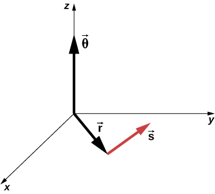

🌀 Week 7 — Rotational Motion¶
Understanding Rotation Through What You Already Know¶
Rotational motion is one of the hardest topics in physics — not because the ideas are new, but because the language changes.
This module rewrites everything using what you already understand from Weeks 1–6.
⭐ 1. Rotational Motion & Linear Motion: The Master Connection¶
1.1 Why Rotation Feels Hard — and Why It Shouldn’t¶
Linear → Rotational Analogy (The Foundation)
Rotational motion is just linear motion wrapped into a circle.
Every linear quantity has a rotational partner:
| Linear | Rotational | Meaning |
|---|---|---|
| \(x\) | \(\theta\) | Position (angle) |
| \(v\) | \(\omega\) | Velocity |
| \(a\) | \(\alpha\) | Acceleration |
| \(m\) | \(I\) | Resistance to motion |
| \(F\) | \(\tau\) | Cause of acceleration |
| \(p = mv\) | \(L = I\omega\) | Momentum |
| \(K = \tfrac12 mv^2\) | \(K = \tfrac12 I\omega^2\) | Kinetic energy |
Understanding this chart makes everything else easier.
Rotation inherits the mathematics of linear motion: - Derivatives describe change - Integrals accumulate change - Forces (or torques) cause acceleration - Mass (or inertia) resists acceleration
The physics does not change — only the geometry and terminology do.
This is why you can rely on Weeks 1–6 such as: - Kinematics - Free-body diagrams - Energy - Momentum
Rotation is simply those ideas in circular form.
Total relationships:
Constant acceleration gives rotational kinematic equations:
[ \omega = \omega_0 + \alpha t ] [ \theta = \theta_0 + \omega_0 t + \tfrac12\alpha t^2 ] [ \omega^2 = \omega_0^2 + 2\alpha(\theta-\theta_0) ]
⭐ 2. Angular Variables: θ, ω, α¶
2.1 What “Angle” Really Represents¶
Understanding θ, ω, α
- Angular position (θ): where the object is on a circle
- Angular velocity (ω): how fast the angle changes
- Angular acceleration (α): how fast ω changes

These three values behave exactly like:
- position → \(x(t)\)
- velocity → \(v(t) = \frac{dx}{dt}\)
- acceleration → \(a(t) = \frac{dv}{dt}\)
The only difference is: - Angle measures rotation, not distance.
But calculus works the same.
Connecting linear & rotational motion:
The arc length \(s\) is a linear displacement across the circle.
Tangential velocity: [ v = r\omega ]
Tangential acceleration: [ a_t = r\alpha ]
Centripetal acceleration: [ a_c = \omega^2 r ]
⭐ 3. Torque — The Rotational Equivalent of Force¶
3.1 Why Force Alone Cannot Tell You How Something Rotates¶
Torque (τ): The Cause of Angular Acceleration
Torque tells you how effectively a force creates rotation.
- \(r\): distance from pivot
- \(F_\perp\): the perpendicular component of the force

Why the angle matters:
- Pulling perpendicular → maximum torque
- Pulling at an angle → less torque
- Pulling directly toward pivot → zero torque
Perpendicular force: [ F_\perp = F\sin\theta ]
So torque is: [ \tau = rF\sin\theta ]
Right-Hand Rule (simplified):
- Curl fingers from \(r\) → \(F\)
- Thumb direction = torque direction
- Out of page: counterclockwise (+)
- Into page: clockwise (–)

⭐ 4. Moment of Inertia (I): How Hard It Is to Rotate Something¶
4.1 The Rotational Version of “Mass”¶
Moment of Inertia (I)
Mass far from the axis contributes a lot to \(I\).
Mass near the axis contributes little.

Students struggle because inertia feels abstract.
Here's the intuition:
- A baseball bat is easier to swing when held near the thick end
(mass closer → smaller I) - A skater spins faster with arms in
(decreasing r decreases I)
Distribution matters more than total mass.
Parallel Axis Theorem
Used whenever the pivot is not at the center of mass.
⭐ 5. Newton’s Second Law for Rotation¶
5.1 The Torque Version of F = ma¶
τ = Iα
Torque causes angular acceleration in the same way force causes linear acceleration.

To solve rotational problems:
1. Draw free-body diagram
2. Choose pivot
3. Determine which forces cause torque
4. Assign torque signs
5. Apply \(\sum \tau = I\alpha\)
Critical reminders:
- Only perpendicular force counts
- Torques have signs (CW / CCW matter)
Pulley systems often require:
[
Tr = I\alpha
]
and
[
a = r\alpha
]
Letting you link rotational + linear motion.
⭐ 6. Rolling Without Slipping¶
6.1 Why Wheels Don’t Slide (Most of the Time)¶
The Condition v = rω
Rolling without slipping means:
- Bottom point is instantaneously at rest
- Wheel grips the ground
- Linear & rotational motion are linked:

The wheel actually has three velocities:
- Top: \(2v\)
- Center: \(v\)
- Bottom: \(0\)
Because rotational and translational motion add/subtract.

Total kinetic energy:
Substitute \(v = r\omega\):
⭐ 7. Worked Examples (Textbook Quality)¶
These are written step-by-step for mastery.¶
Example 1 — Torque from an Angled Force
A 0.25 m wrench with a 120 N force applied at 90°:
If applied at 30°:
[ \tau = rF\sin30^\circ ] [ \tau = (0.25)(120)(0.5)=15\ \text{N·m} ]
If force is NOT applied at the end:
Example 2 — Rolling Cylinder
Cylinder: \(I = \tfrac12 mr^2\), moving at 4 m/s
Total KE:
[ K = \tfrac12 mv^2 + \tfrac12 I\omega^2 ] [ = \tfrac12 mv^2 + \tfrac14 mv^2 = \tfrac34 mv^2 ]
Same method works for:
- spheres
- hoops
- disks
Example 3 — Angular Acceleration from Torque
Disk (2 kg, r=0.20 m), F_tan=10 N.
Moment of inertia:
A tension-based pulley system follows the same pattern.
⭐ 8. Practice Problems (Hidden Solutions)¶
Try These First
- A 15 N force at 45° acts 0.40 m from pivot. Find torque.
- A disk rolls at 3 m/s. Find ω.
- A rod (2 kg, 1.2 m) pivots at end. Find I_end.
- A wheel accelerates from 2 to 8 rad/s in 3s. Find α.
- A 6 kg cylinder rolls at 5 m/s. Find total KE.
These cover:
- torque
- rolling motion
- parallel axis theorem
- rotational energy
- angular acceleration
Solutions:
-
\[ \tau = rF\sin\theta = (0.40)(15)(\sin45^\circ)=4.24 \]
-
\[ \omega = \frac{v}{r} \]
-
[ I_{\text{cm}} = \tfrac{1}{12}mL^2 = 0.24 ] [ I_{\text{end}} = I_{\text{cm}} + md^2 = 0.96 ]
-
\[ \alpha = \frac{\Delta\omega}{t} = \frac{8-2}{3}=2 \]
-
\[ K = \tfrac12 mv^2 + \tfrac12 I\omega^2 \]
⭐ 9. Summary Sheet (Exam Essentials)¶
[ \tau = rF\sin\theta ] [ I = \sum mr^2 ] [ \tau = I\alpha ] [ v = r\omega ] [ a_t = r\alpha \qquad a_c = \omega^2 r ] [ K = \tfrac12 mv^2 + \tfrac12 I\omega^2 ]